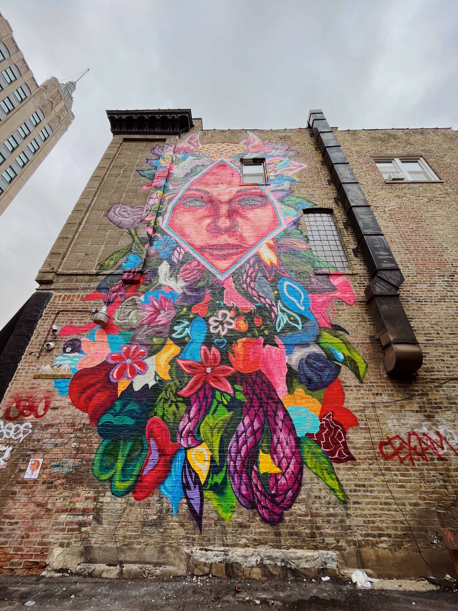
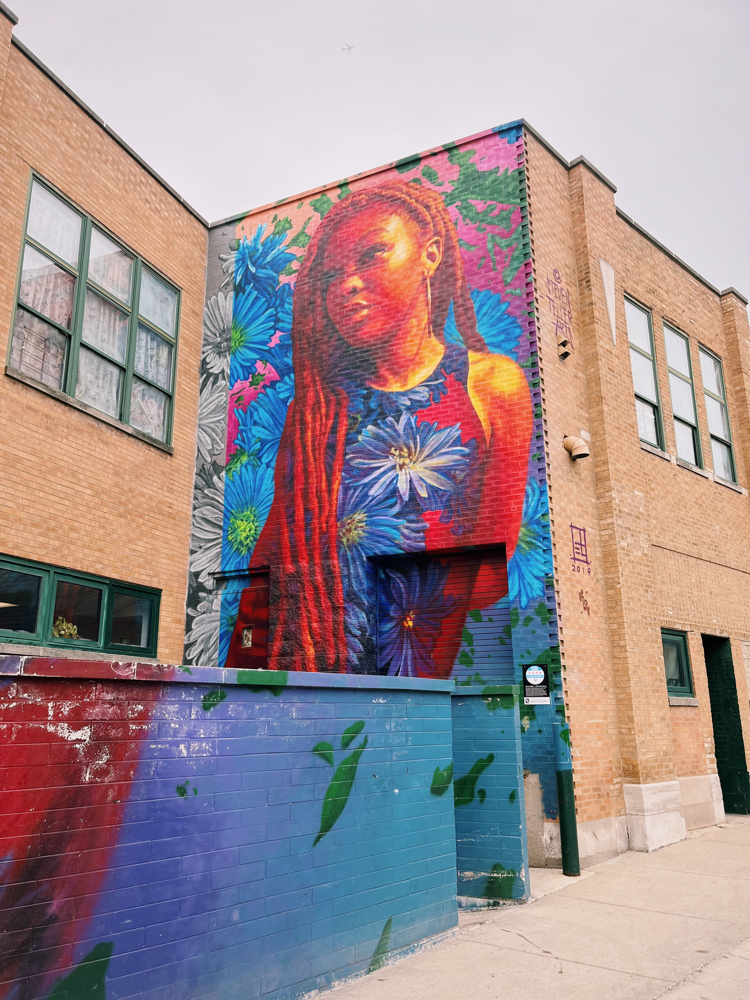
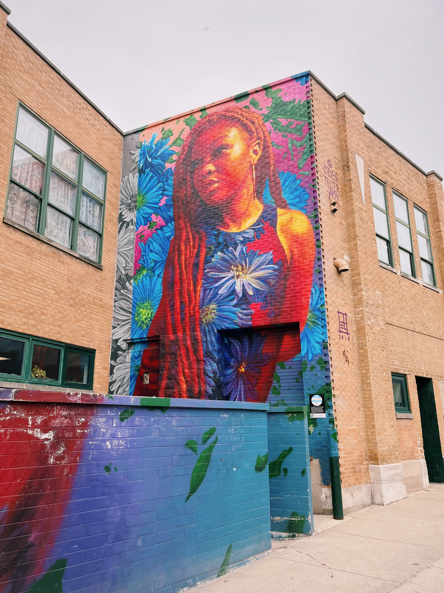
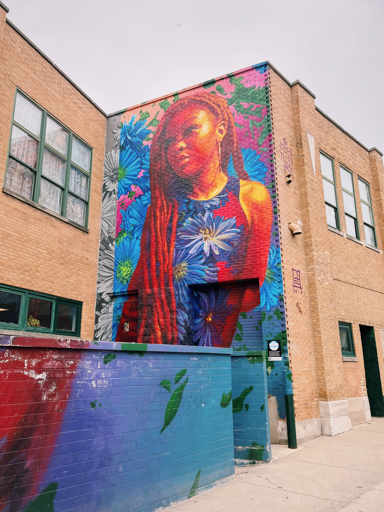
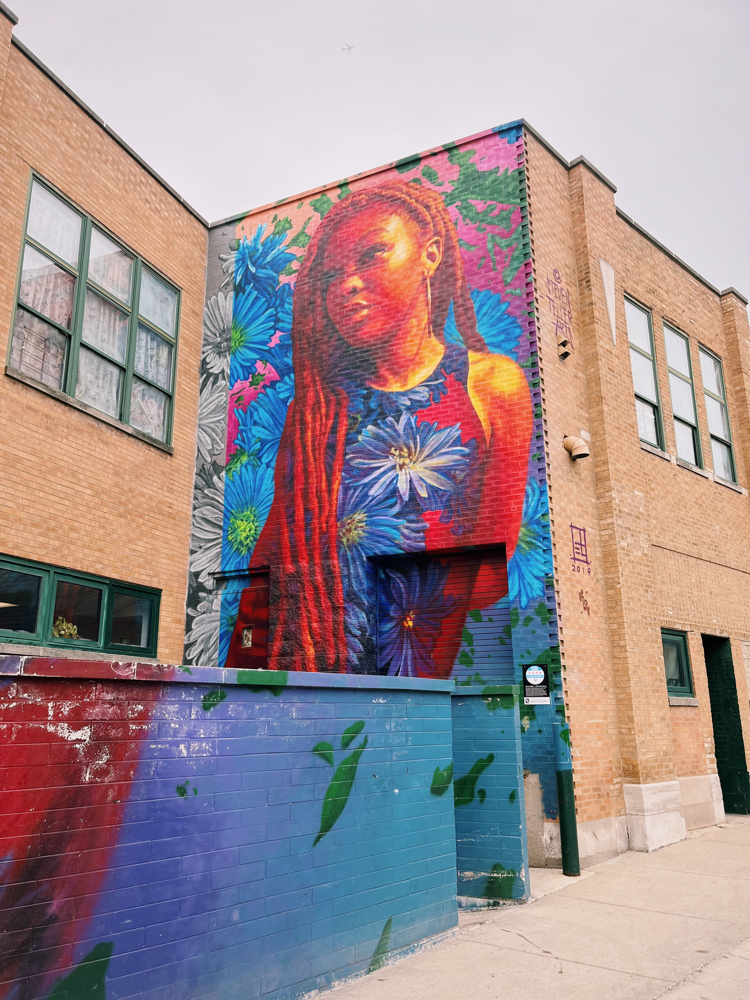

Street Art in Chicago
I've lived in Chicago for the past nine years, and have fallen in love with its street art.
Below are some of the street art pieces that I have found while exploring the city.

 


I've lived in Chicago for the past nine years, and have fallen in love with its street art.
Below are some of the street art pieces that I have found while exploring the city.

Thanks for visiting!
Created by Anna Komkova for ITMD 361 Spring 2023